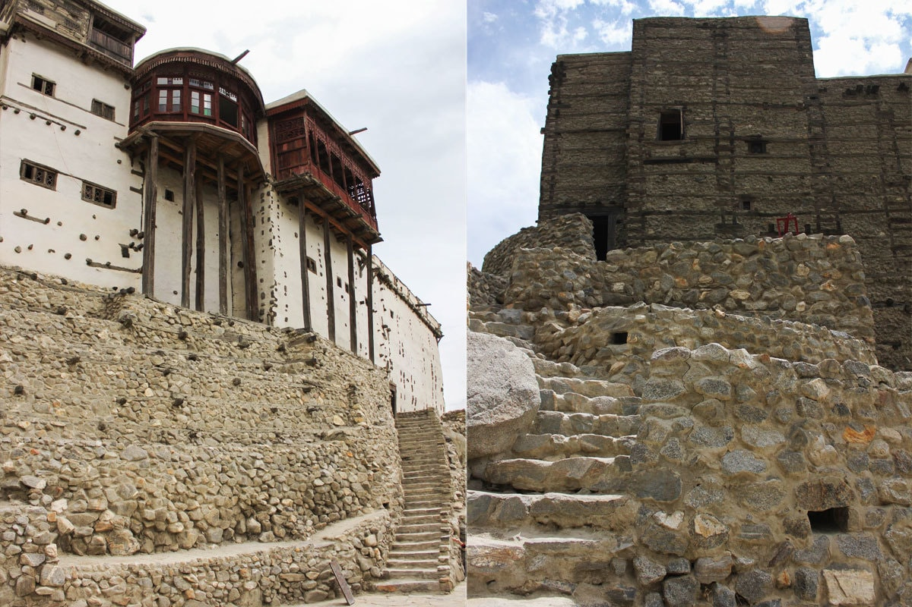
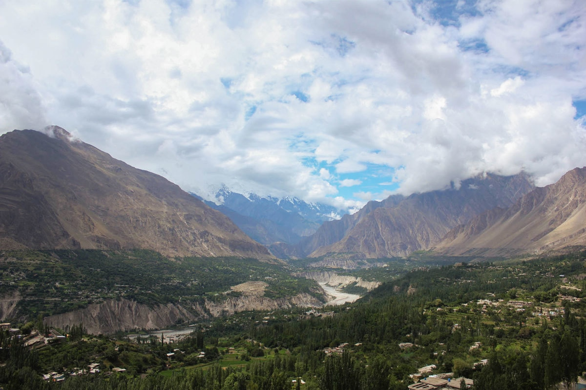
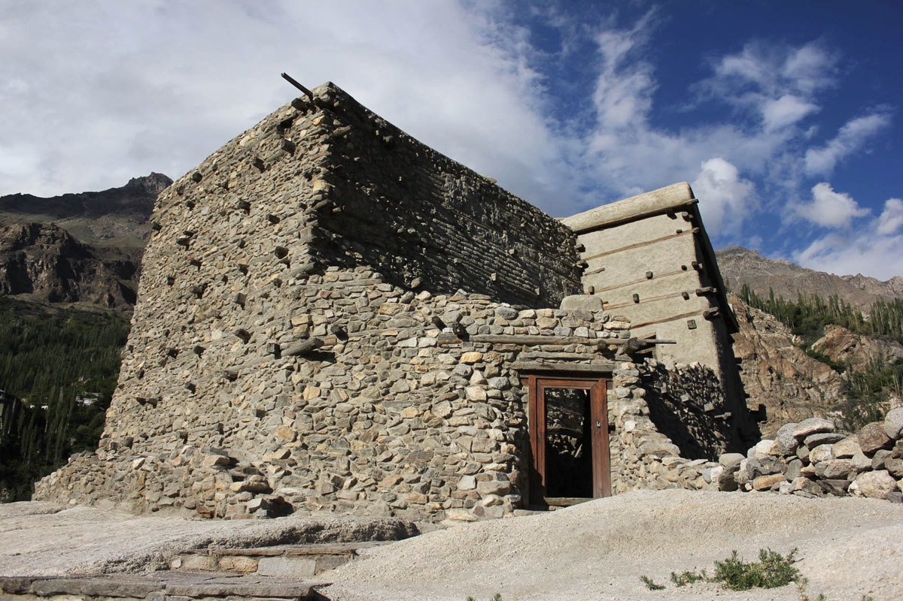

My magical holiday in Hunza will inspire u to hit the road.
Ms. Shazia Tariq | Feb 01,2022 | 104 comments | 20 min read
Towards the end of summer, my family headed off to Hunza for a much needed vacation. We had been planning the
trip for a while and there was one aspect of the trip that caused some indecision.
One option was to go by road, eliminating the uncertainty of flight delays and cancellations. The second
option
was to fly to Gilgit, and then make the two-hour drive on to Hunza.
In the end, we decided on the scenic route. Though the drive is a long one (we broke the drive by stopping
in
Naran for a night), it's worth every second, as the views at every turn are stunning. I have been to Skardu
a
few times, but always by air.
It's a completely different experience when you drive right through the mountains along the Karakoram
Highway.
This region is ridiculously beautiful and the pictures really don't do it justice. Just know that if it
looks
impressive in a picture, it's ten times more picturesque in real life.
Here are some of the things you should definitely check out if you're in Hunza:
1. Baltit Fort

This fort is about 700 years old and is influenced by Tibetan architecture, bearing some similarity to the
Potala Palace in Lhasa. Over the years, various Hunza-Nagar rulers have made additions and changes to the
original structure. Tickets cost Rs250 and buy you a 45-minute guided tour, complete with a narration of the
fascinating history of the fort and how its inhabitants used to live over the years.

Getting to the fort is about a 20-minute steep uphill walk (from Hunza Serena Inn) along a cobblestone path,
so comfy shoes are essential. The magnificent view of the the Hunza valley once your reach the top is well
worth the exertion.
2. Altit Fort

Restoration of the Altit Fort began in 2004 and was completed six years later. The fort is now open to the
public and the grounds include the KhaBasi Cafe and the Leif Larsen Music Center. Tickets cost Rs300 and
here too you get a guided tour of the fort, which is a bit smaller than Baltit but just as fascinating and
with equally remarkable views all around.
This charming and unique cafe, run solely by women, has a small indoor dining space, but the best spot for a
cup of tea is the veranda overlooking the adjacent valley. Stop by after touring the Altit Fort to sample
traditional Hunza cuisine, like the Chap Chrro (flatbread with a meat filling), Brustz Shapik (flatbread
filled with local cheese, seasoned with herbs and apricot oil), and Diram Phitti (a wholesome dessert made
with wheat and apricot oil).
3. Cafe de Hunza
This little cafe is a five minute walk from the Serena Inn. A particularly popular item is the Hunza walnut
cake, which is a dense pastry-like cake with a caramel walnut filling. I'd also highly recommend their huge,
fluffy pancakes, available with a variety of toppings like Spinach and Cheese and Nutella.